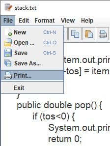
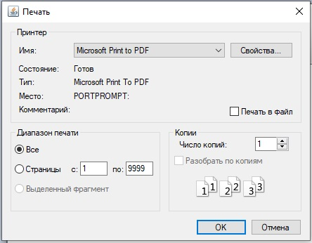

Printing a Document
Once you have created a document, you can print copy of
your computer is connected to a printer.
- Click the File and select Print (Figure_9).
- From the Print Dialog configure option and send to Print (Figure_10).

Figure_9

Figure_10